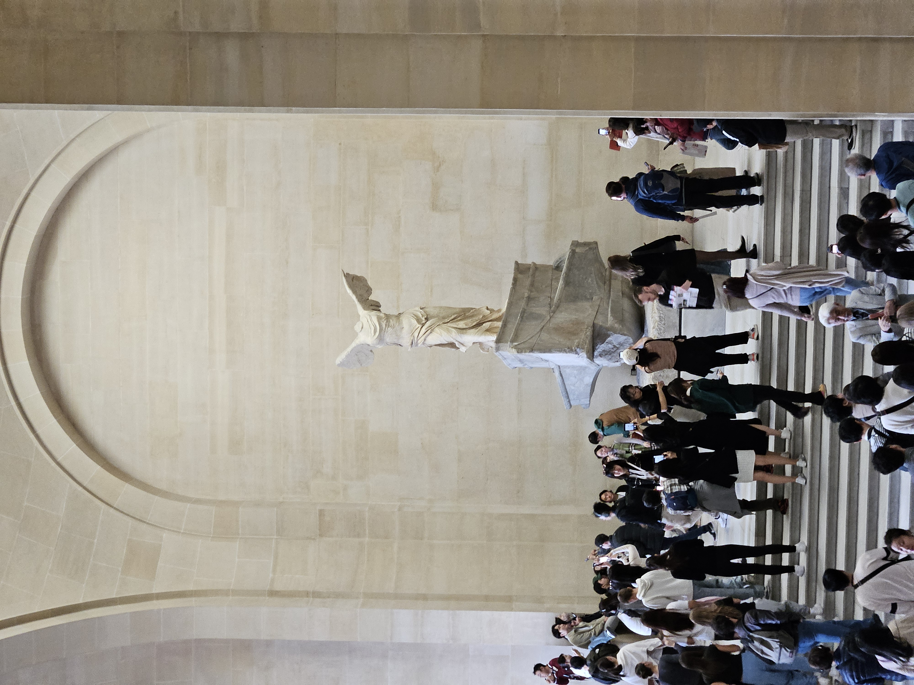
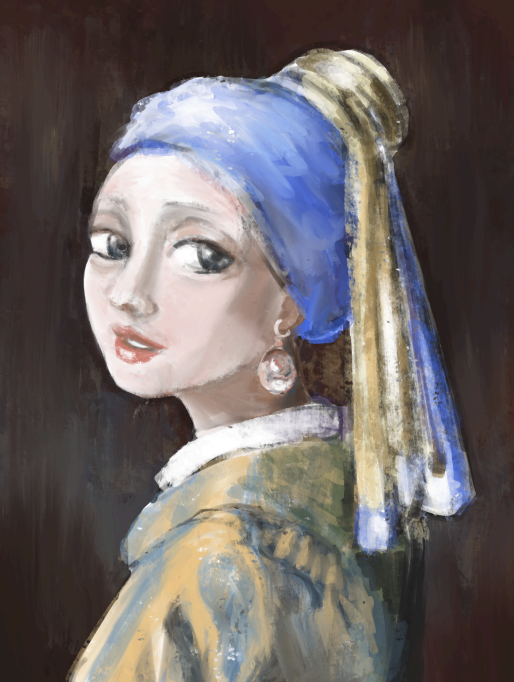

Studio 2 - Visual Thinking Analysis
Part One
This image captures the famous statue Winged Victory of Samothrace at the Louvre Museum, surrounded by a crowd of visitors. Below is an analysis using the visual thinking framework outlined in the assignment. The image showcases Winged Victory of Samothrace, an ancient Greek sculpture of Nike, the goddess of victory, prominently displayed at the top of a grand staircase in the Louvre Museum. The statue is the focal point, framed by the architecture, with a large crowd gathered around, many taking photos. The grand arch behind the statue frames the subject, reinforcing its importance. The steps create leading lines, drawing the eye toward the statue. The crowd adds a dynamic element, showing movement, interaction, and engagement with the artwork. Some visitors are taking photos, while others seem to be admiring or discussing the piece. The stark, weathered appearance of the statue contrasts with the lively and colorful modern crowd, highlighting the tension between history and contemporary experience.
Part Two
The image I chose is a digital painting inspired by Johannes Vermeer’s Girl with a Pearl Earring, recreated with a looser, painterly style. What makes this image particularly interesting is the expressive brushstrokes that give it a modern, almost impressionistic quality while still maintaining the essence of the original. While the painting appears classical at first glance, the texture and color choices reflect a contemporary interpretation. This reimagining makes the artwork feel more dynamic and personal. This image relates to my collection because it represents reinterpretation and creative exploration—central themes in my work. As someone passionate about art, design, and 3D modeling, I am fascinated by how traditional works can be transformed through digital techniques. This painting exemplifies my interest in blending historical inspiration with modern artistic methods, a recurring theme in my creative process. My collection tells a story about my artistic journey—how I engage with and reinterpret classic works to develop my own style. It also reflects my growing appreciation for digital painting and my evolving relationship with art. To enhance the image, I could refine the details, adjust the lighting for more depth, or experiment with different textures to further modernize the look.
STUDIO 2 - Visual Thinking Strategies Research
The article highlights the importance of close reading and visual thinking by engaging students with intriguing photographs stripped of captions and context. Through the “What’s Going On in This Picture?” activity, students are encouraged to slow down, observe details, make connections, and ask thoughtful questions. Teachers and students worldwide have found this method valuable for developing critical thinking skills, improving evidence-based reasoning, and fostering curiosity about the world. The process mirrors detective work, as students analyze images, support their interpretations, and build on each other’s observations. Educators have adapted this approach beyond visual literacy, applying it to reading, science, and discussions on current events. The method not only sharpens analytical skills but also enhances classroom conversations, introduces new perspectives, and connects students to broader global issues. Reflecting on this, it is clear that fostering curiosity and patience in students leads to deeper understanding and engagement, making learning a more interactive and meaningful experience.
Splatoon is a video game with a very engaging website. It has pictures that give off the appearance of being taped up. It looks like a scrapbook.
STUDIO 1 - Overlays Design Pattern Research
Modals, also known as overlays or dialogs, were originally created to simplify user interfaces and save screen space. However, they have become overused and often annoy users, much like old pop-up ads. This article explains when and how to use modals properly to improve user experience.
A modal is a window that appears on top of the main page, blocking interaction with the rest of the site until the user responds. Modals are useful for grabbing attention, collecting user input (like login forms), or showing extra information without leaving the page. However, they should not be used for error messages, success notifications, or mobile devices, as they can disrupt user flow.
To create effective modals, designers should follow key guidelines. A modal should always have an easy way to close it, such as a cancel button, an "X" button, or clicking outside the window. The title should clearly explain the purpose of the modal, and buttons should be labeled in a way that avoids confusion. The modal should be sized appropriately—not too big or too small—and placed in the upper half of the screen for better visibility. A lightbox effect (dimming the background) helps focus attention on the modal.
While modals can be helpful, designers should think carefully before using them. If users instinctively close modals without reading them, they may not be the best choice. Instead, alternatives like non-modal toasts can provide important information without interrupting the user experience.
Learning Journal SketchSTUDIO 1 - Research Form Design
Designing forms is an important part of creating user-friendly websites and apps, and getting it right can really help increase conversions. Looking at the best practices for form design, I’ve learned that keeping things simple and clear is key. Reducing unnecessary fields and complexity makes forms easier for users to fill out. Using a single-column layout is especially helpful for keeping the process smooth, particularly on mobile devices.
What really stood out to me about the article is how important it is to make forms accessible to everyone. It’s not just about making the form look nice but also making sure people with different abilities can use it easily. Features like clear error messages, compatibility with screen readers, and options to adjust text size are essential.
I also realized how the design choices can affect user behavior. For example, asking easy questions first builds momentum, and showing a progress bar for multi-step forms keeps users engaged. Every detail, from labels to button design, can improve the overall experience.
The new FAFSA form that came out in 2024 is such an improvement. It's a lot shorter, which saved me a lot of time, and the language used is a lot more casual, making it less intimidating to fill out.